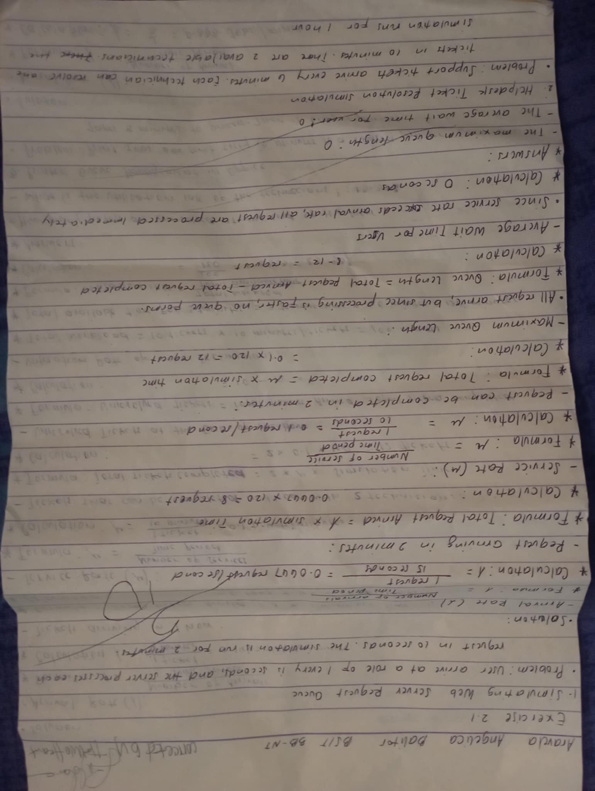
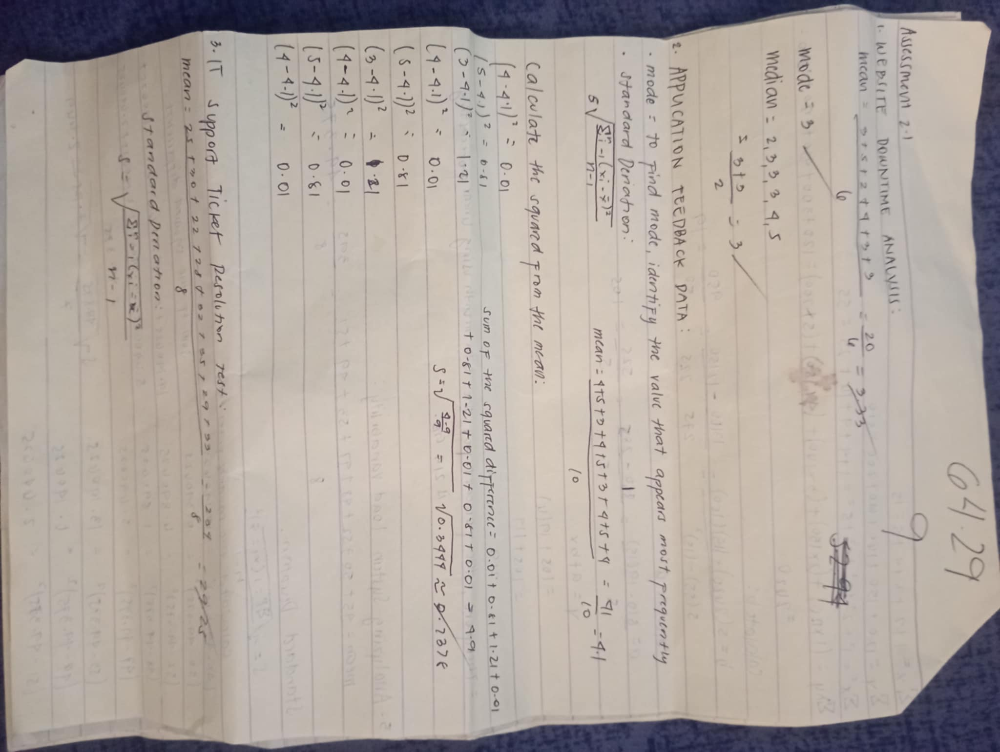
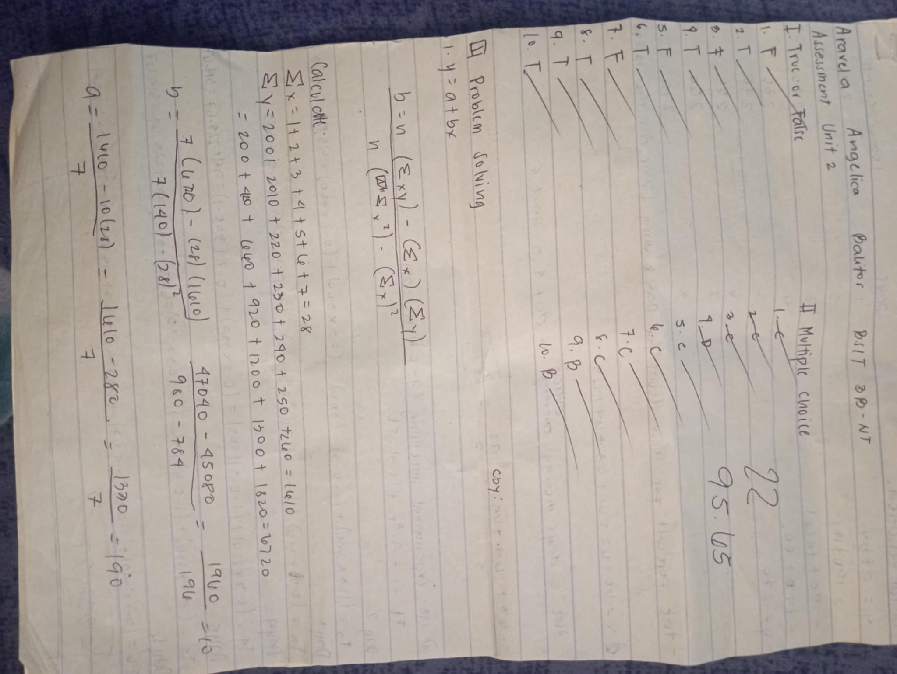
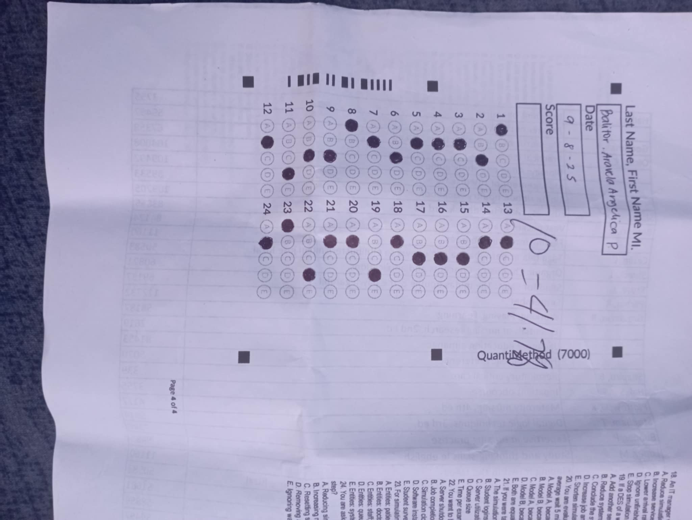

My Activities & Reflection
Exercise 2.1
Score: 50%
I only achieved half of the total points in this activity. This means that while I understood the process, there were errors in my calculations and explanations. It reminded me to pay more attention to the details and review each step before finalizing my answers.
Exercise 2.1 (Solutions)

Score: 88.24%
I performed well in the solution sheet of this exercise. The high score shows that I applied the correct formulas and presented the computations in an organized way. This activity helped me improve my accuracy and understanding of the lesson.
Assessment 2.1 (Solutions)
Score: 64.29%
My performance in this assessment was average. I managed to answer most of the problems correctly but still made a few mistakes in the process. This taught me to double-check my formulas and ensure that I explain every computation clearly.
Exercise 2.2

This activity helped strengthen my understanding of statistical and quantitative computations. I was able to apply what I learned from the previous exercises, showing better accuracy and confidence in solving problems.
Assessment Unit 2
Score: 95.65%
I earned an excellent score in the overall assessment for Unit 2. This result shows significant improvement from my earlier tasks. I was able to demonstrate clear understanding of the concepts and proper application of the formulas. It reflects my progress and hard work throughout the unit.
Exam
Score: 41.7%
My exam score was below my expectations. This shows that I need to review the lessons more thoroughly and practice solving different types of problems. It also reminded me to manage my time wisely and read each question carefully during exams.